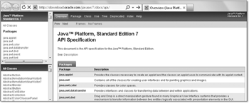
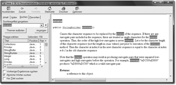
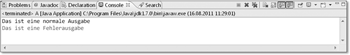

2.2 Von der Klasse zur Anweisung
Programme sind Ablauffolgen, die im Kern aus Anweisungen bestehen. Sie werden zu größeren Bausteinen zusammengesetzt, den Methoden, die wiederum Klassen bilden. Klassen selbst werden in Paketen gesammelt, und eine Sammlung von Paketen wird als Java-Archiv ausgeliefert.
2.2.1 Was sind Anweisungen?
Java zählt zu den imperativen Programmiersprachen, in denen der Programmierer die Abarbeitungsschritte seiner Algorithmen durch Anweisungen (engl. statements) vorgibt. Anweisungen können unter anderem sein:
- Ausdrucksanweisungen, etwa für Zuweisungen oder Methodenaufrufe
- Fallunterscheidungen, zum Beispiel mit if
- Schleifen für Wiederholungen, etwa mit for oder do-while
| Hinweis |
|
Diese Befehlsform ist für Programmiersprachen gar nicht selbstverständlich, da es Sprachen gibt, die zu einer Problembeschreibung selbstständig eine Lösung finden. Ein Vertreter dieser Art von Sprachen ist Prolog. Die Schwierigkeit hierbei besteht darin, die Aufgabe so präzise zu beschreiben, dass das System eine Lösung finden kann. Auch die Datenbanksprache SQL ist keine imperative Programmiersprache, denn wie das Datenbankmanagement-System zu unserer Abfrage die Ergebnisse ermittelt, müssen und können wir weder vorgeben noch sehen. |
2.2.2 Klassendeklaration
Programme setzen sich aus Anweisungen zusammen. In Java können jedoch nicht einfach Anweisungen in eine Datei geschrieben und dem Compiler übergeben werden. Sie müssen zunächst in einen Rahmen gepackt werden. Dieser Rahmen heißt Kompilationseinheit (engl. compilation unit) und deklariert eine Klasse mit ihren Methoden und Variablen.
Die nächsten Programmcodezeilen werden am Anfang etwas befremdlich wirken (wir erklären die Elemente später genauer). Die folgende Datei erhält den (frei wählbaren) Namen Application.java:
Listing 2.1: Application.java
public class Application
{
public static void main( String[] args )
{
// Hier ist der Anfang unserer Programme
// Jetzt ist hier Platz für unsere eigenen Anweisungen
// Hier enden unsere Programme
}
}
Hinter den beiden Schrägstrichen // befindet sich ein Kommentar. Er gilt bis zum Ende der Zeile und dient dazu, Erläuterungen zu den Quellcodezeilen hinzuzufügen, die den Code verständlicher machen.

Eclipse zeigt Schlüsselwörter, Literale und Kommentare farbig an. Diese Farbgebung
lässt sich unter Window • Preferences ändern.

Unter Tools • Options und dann im Bereich Fonts & Color lassen sich bei NetBeans der Zeichensatz und die Farbbelegung ändern.
Java ist eine objektorientierte Programmiersprache, die Programmlogik außerhalb von Klassen nicht erlaubt. Aus diesem Grund deklariert die Datei Application.java mit dem Schlüsselwort class eine Klasse Application, um später eine Methode mit der Programmlogik anzugeben. Der Klassenname darf grundsätzlich beliebig sein, doch besteht die Einschränkung, dass in einer mit public deklarierten Klasse der Klassenname so lauten muss wie der Dateiname. Alle Schlüsselwörter in Java beginnen mit Kleinbuchstaben, und Klassennamen beginnen üblicherweise mit Großbuchstaben.
In den geschweiften Klammern der Klasse folgen Deklarationen von Methoden, also Unterprogrammen, die eine Klasse anbietet. Eine Methode ist eine Sammlung von Anweisungen unter einem Namen.
2.2.3 Die Reise beginnt am main()
Wir programmieren hier eine besondere Methode, die sich main() nennt. Die Schlüsselwörter davor und die Angabe in dem Paar runder Klammern hinter dem Namen müssen wir einhalten. Die Methode main() ist für die Laufzeitumgebung etwas ganz Besonderes, denn beim Aufruf des Java-Interpreters mit einem Klassennamen wird unsere Methode als Erstes ausgeführt.[54](Na ja, so ganz präzise ist das auch nicht. In einem static-Block könnten wir auch einen Funktionsaufruf setzen, doch das wollen wir hier einmal nicht annehmen. static-Blöcke werden beim Laden der Klassen in die virtuelle Maschine ausgeführt. Andere Initialisierungen sind dann auch schon gemacht.) Demnach werden genau die Anweisungen ausgeführt, die innerhalb der geschweiften Klammern stehen. Halten wir uns fälschlicherweise nicht an die Syntax für den Startpunkt, so kann der Interpreter die Ausführung nicht beginnen, und wir haben einen semantischen Fehler produziert, obwohl die Methode selbst korrekt gebildet ist. Innerhalb von main() befindet sich ein Parameter mit dem Namen args. Der Name ist willkürlich gewählt, wir werden allerdings immer args verwenden.
Dass Fehler unterkringelt werden, hat sich als Visualisierung durchgesetzt. Eclipse
gibt im Falle eines Fehlers sehr viele Hinweise. Ein Fehler im Quellcode wird von
Eclipse mit einer gekringelten roten Linie angezeigt. Als weiterer Indikator wird
(unter Umständen erst beim Speichern) ein kleines rundes Kreuz an der Fehlerzeile
angezeigt. Gleichzeitig findet sich im Schieberegler ein kleiner roter Block. Im Package Explorer findet sich ebenfalls ein Hinweis auf Fehler. Den nächsten Fehler springt die Tastenkombination
 + (Punkt) an.
+ (Punkt) an.
+ führt bei NetBeans nur in der Fehleransicht zum Fehler selbst, nicht aber aus dem
Java-Editor heraus. Die Tastenkombination kann im Editor einfach über Tools • Option gesetzt werden. Dann wählen wir Keymap, geben unter Search den Suchbegriff »Error« ein und selektieren dann in der Action-Spalte Next Error in Editor. In der zweiten Spalte Shortcut setzen wir den Fokus und drücken + . Dann beenden wir den Dialog mit OK.
2.2.4 Der erste Methodenaufruf: println()
In Java gibt es eine große Klassenbibliothek, die es Entwicklern erlaubt, Dateien anzulegen, Fenster zu öffnen, auf Datenbanken zuzugreifen, Web-Services aufzurufen und vieles mehr. Am untersten Ende der Klassenbibliothek stehen Methoden, die eine gewünschte Operation ausführen.
Eine einfache Methode ist println(). Sie gibt Meldungen auf dem Bildschirm (der Konsole) aus. Innerhalb der Klammern von println() können wir Argumente angeben. Die println()-Methode erlaubt zum Beispiel Zeichenketten (ein anderes Wort ist Strings) als Argumente, die dann auf der Konsole erscheinen. Ein String ist eine Folge von Buchstaben, Ziffern oder Sonderzeichen in doppelten Anführungszeichen.
Implementieren[55](»Implementieren« stammt vom lateinischen Wort »implere« ab, was für »erfüllen« und »ergänzen« steht.) wir damit eine vollständige Java-Klasse mit einem Methodenaufruf, die über println() etwas auf dem Bildschirm ausgibt:
Listing 2.2: Application.java
class Application
{
public static void main( String[] args )
{
// Start des Programms
System.out.println( "Hallo Javanesen" );
// Ende des Programms
}
}
| Hinweis |
|
Der Begriff Methode ist die korrekte Bezeichnung für ein Unterprogramm in Java – die Java Language Specification (JLS) verwendet den Begriff Funktion nicht. |
2.2.5 Atomare Anweisungen und Anweisungssequenzen
Methodenaufrufe wie System.out.println(), die leere Anweisung, die nur aus einem Semikolon besteht, oder auch Variablendeklarationen (die später vorgestellt werden) nennen sich atomare (auch elementare) Anweisungen. Diese unteilbaren Anweisungen werden zu Anweisungssequenzen zusammengesetzt, die Programme bilden.
| Beispiel |
|
Eine Anweisungssequenz: System.out.println( "Wer morgens total zerknittert aufsteht, " ); |
Die Laufzeitumgebung von Java führt jede einzelne Anweisung der Sequenz in der angegebenen Reihenfolge hintereinander aus. Anweisungen und Anweisungssequenzen dürfen nicht irgendwo stehen, sondern nur an bestimmen Stellen, etwa innerhalb eines Methodenkörpers.
2.2.6 Mehr zu print(), println() und printf() für Bildschirmausgaben
Die meisten Methoden verraten durch ihren Namen, was sie leisten, und für eigene Programme ist es sinnvoll, aussagekräftige Namen zu verwenden. Wenn die Java-Entwickler die Ausgabemethode statt println() einfach glubschi() genannt hätten, bliebe uns der Sinn der Methode verborgen. println() zeigt jedoch durch den Wortstamm »print« an, dass etwas geschrieben wird. Die Endung ln (kurz für line) bedeutet, dass noch ein Zeilenvorschubzeichen ausgegeben wird. Umgangssprachlich heißt das: Eine neue Ausgabe beginnt in der nächsten Zeile. Neben println() existiert die Bibliotheksmethode print(), die keinen Zeilenvorschub anhängt.
Die printXXX()-Methoden[56](Abkürzung für Methoden, die mit print beginnen, also print() und println().) können in Klammern unterschiedliche Argumente bekommen. Ein Argument ist ein Wert, den wir der Methode beim Aufruf mitgeben. Auch wenn wir einer Methode keine Argumente übergeben, muss beim Aufruf hinter dem Methodennamen ein Klammernpaar folgen. Dies ist konsequent, da wir so wissen, dass es sich um einen Methodenaufruf handelt und um nichts anderes. Andernfalls führt es zu Verwechslungen mit Variablen.
Überladene Methoden
Java erlaubt Methoden, die gleich heißen, denen aber unterschiedliche Dinge übergeben werden können; diese Methoden nennen wir überladen. Die printXXX()-Methoden sind zum Beispiel überladen und akzeptieren neben dem Argumenttyp String auch Typen wie einzelne Zeichen, Wahrheitswerte oder Zahlen – oder auch gar nichts:
Listing 2.3: OverloadedPrintln.java
public class OverloadedPrintln
{
public static void main( String[] args )
{
System.out.println( "Verhaften Sie die üblichen Verdächtigen!" );
System.out.println( true );
System.out.println( –273 );
System.out.println(); // Gibt eine Leerzeile aus
System.out.println( 1.6180339887498948 );
}
}
Die Ausgabe ist:
Verhaften Sie die üblichen Verdächtigen!
true
–273
1.618033988749895
In der letzten Zeile ist gut zu sehen, dass es Probleme mit der Genauigkeit gibt – dieses Phänomen werden wir uns noch genauer anschauen.
Ist in Eclipse eine andere Ansicht aktiviert, etwa weil wir auf das Konsolenfenster
geklickt haben, bringt die Taste uns wieder in den Editor zurück.
Variable Argumentlisten
Java unterstützt seit der Version 5 variable Argumentlisten, was bedeutet, dass es möglich ist, bestimmten Methoden beliebig viele Argumente (oder auch kein Argument) zu übergeben. Die Methode printf() erlaubt zum Beispiel variable Argumentlisten, um gemäß einer Formatierungsanweisung – einem String, der immer als erstes Argument übergeben werden muss – die nachfolgenden Methodenargumente aufzubereiten und auszugeben:
Listing 2.4: VarArgs.java
public class VarArgs
{
public static void main( String[] args )
{
System.out.printf( "Was sagst du?%n" );
System.out.printf( "%d Kanäle und überall nur %s.%n", 220, "Katzen" );
}
}
Die Ausgabe der Anweisung ist:
Was sagst du?
220 Kanäle und überall nur Katzen.
Die Formatierungsanweisung %n setzt einen Zeilenumbruch, %d ist ein Platzhalter für eine ganze Zahl (%f wäre für eine Fließkommazahl) und %s ein Platzhalter für eine Zeichenkette oder etwas, das in einen String konvertiert werden soll. Weitere Platzhalter werden in Abschnitt 4.11, »Ausgaben formatieren«, vorgestellt.
2.2.7 Die API-Dokumentation
Die wichtigste Informationsquelle für Programmierer ist die offizielle API-Dokumentation von Oracle. Zu der Methode println() können wir bei der Klasse PrintStream zum Beispiel erfahren, dass diese eine Ganzzahl, eine Fließkommazahl, einen Wahrheitswert, ein Zeichen oder aber eine Zeichenkette akzeptiert. Die Dokumentation ist weder Teil vom JRE noch vom JDK – dafür ist die Hilfe zu groß. Wer über eine permanente Internetverbindung verfügt, kann die Dokumentation online unter http://tutego.de/go/javaapi lesen oder sie von der Oracle-Seite http://www.oracle.com/technetwork/java/javase/downloads/ herunterladen und als Sammlung von HTML-Dokumenten auspacken.
Abbildung 2.1: Online-Dokumentation bei Oracle
Aus Entwicklungsumgebungen ist die API-Dokumentation auch zugänglich, sodass eine Suche auf der Webseite nicht nötig ist.
Eclipse zeigt mithilfe der Tasten  +
+  in einem eingebetteten Browser-Fenster die API-Dokumentation an, wobei die JavaDoc
von den Oracle-Seiten kommt. Mithilfe der -Taste bekommen wir ein kleines gelbes Vorschaufenster, das ebenfalls die API-Dokumentation
zeigt.
in einem eingebetteten Browser-Fenster die API-Dokumentation an, wobei die JavaDoc
von den Oracle-Seiten kommt. Mithilfe der -Taste bekommen wir ein kleines gelbes Vorschaufenster, das ebenfalls die API-Dokumentation
zeigt.
Abbildung 2.2: API-Dokumentation in Eclipse
API-Dokumentation im HTML-Help-Format *
Die Oracle-Dokumentation als Loseblattsammlung hat einen Nachteil, der sich im Programmieralltag bemerkbar macht: Sie lässt sich nur ungenügend durchsuchen. Da die Webseiten statisch sind, können wir nicht einfach nach Methoden forschen, die zum Beispiel auf »listener« enden. Franck Allimant (http://tutego.de/go/allimant) übersetzt regelmäßig die HTML-Dokumentation von Oracle in das Format Windows HTML-Help (CHM-Dateien), das auch unter Unix und Mac OS X mit der Open-Source-Software http://xchm.sourceforge.net/ gelesen werden kann. Neben den komprimierten Hilfe-Dateien lassen sich auch die Sprach- und JVM-Spezifikation sowie die API-Dokumentation der Enterprise Edition und der Servlets im Speziellen beziehen.
Abbildung 2.3: API-Dokumentation in der Windows-Hilfe
2.2.8 Ausdrücke
Ein Ausdruck (engl. expression) ergibt bei der Auswertung ein Ergebnis. Im Beispiel OverloadedPrintln.java steht in der main()-Methode:
System.out.println( "Verhaften Sie die üblichen Verdächtigen!" );
System.out.println( true );
System.out.println( –273 );
System.out.println( 1.6180339887498948 );
Die Argumente für println(), wie der String, der Wahrheitswert oder die Zahlen, sind Ausdrücke. Im dem Beispiel kommt der Ausdruck von einem Literal, aber mit Operatoren lassen sich auch komplexere Ausdrücke wie (1 + 2) * 1.19 bilden:
System.out.println( (1 + 2) * 1.19 );
Der Wert eines Ausdrucks wird auch Resultat genannt. Ausdrücke haben immer einen Wert, während das für Anweisungen (wie eine Schleife) nicht gilt. Daher kann ein Ausdruck an allen Stellen stehen, an denen ein Wert benötigt wird, etwa als Argument von println(). Dieser Wert ist entweder ein numerischer Wert (von arithmetischen Ausdrücken), ein Wahrheitswert (boolean) oder eine Referenz (etwa von einer Objekt-Erzeugung).
2.2.9 Ausdrucksanweisung
In einem Programm reiht sich Anweisung an Anweisung. Auch bestimmte Ausdrücke und Methodenaufrufe lassen sich als Anweisungen einsetzen, wenn sie mit einem Semikolon abgeschlossen sind; wir sprechen dann von einer Ausdrucksanweisung (engl. expression statement). Jeder Methodenaufruf mit Semikolon bildet zum Beispiel eine Ausdrucksanweisung. Dabei ist es egal, ob die Methode selbst eine Rückgabe liefert oder nicht.
System.out.println(); // println() besitzt keine Rückgabe (void)
Math.random(); // random() liefert eine Fließkommazahl
Die Methode Math.random() liefert als Ergebnis einen Zufallswert zwischen 0 (inklusiv, kann also 0 werden) und 1 (exklusiv, erreicht 1 also nie wirklich). Da mit dem Ergebnis des Ausdrucks nichts gemacht wird, wird der Rückgabewert verworfen. Im Fall der Zufallsmethode ist das nicht sinnvoll, denn sie macht außer der Berechnung nichts anderes.
Neben Methodenaufrufen mit abschließendem Semikolon gibt es andere Formen von Ausdrucksanweisungen, wie etwa Zuweisungen. Doch allen ist das Semikolon gemeinsam.[57](Das Semikolon dient auch nicht wie in Pascal zur Trennung von Anweisungen, sondern schließt sie immer ab.)
| Hinweis |
|
Nicht jeder Ausdruck kann eine Ausdrucksanweisung sein. 1+2 ist etwa ein Ausdruck, aber 1+2; – also der Ausdruck mit Semikolon abgeschlossen – ist keine gültige Anweisung. In JavaScript ist so etwas erlaubt, in Java nicht. |
2.2.10 Erste Idee der Objektorientierung
In einer objektorientierten Programmiersprache sind alle Methoden an bestimmte Objekte gebunden (daher der Begriff objektorientiert). Betrachten wir zum Beispiel das Objekt Radio: Ein Radio spielt Musik ab, wenn der Einschalter betätigt wird und ein Sender und die Lautstärke eingestellt sind. Ein Radio bietet also bestimmte Dienste (Operationen) an, wie Musik an/aus, lauter/leiser. Zusätzlich hat ein Objekt auch noch einen Zustand, zum Beispiel die Lautstärke oder das Baujahr. Wichtig in objektorientierten Sprachen ist, dass die Operationen und Zustände immer (und da gibt es keine Ausnahmen) an Objekte beziehungsweise Klassen gebunden sind (mehr zu dieser Unterscheidung folgt später). Der Aufruf einer Methode auf einem Objekt richtet die Anfrage genau an ein bestimmtes Objekt. Steht in einem Java-Programm nur die Anweisung lauter, so weiß der Compiler nicht, wen er fragen soll, wenn es etwa drei Radio-Objekte gibt. Was ist, wenn es auch einen Fernseher mit der gleichen Operation gibt? Aus diesem Grund verbinden wir das Objekt, das etwas kann, mit der Operation. Ein Punkt trennt das Objekt von der Operation oder dem Zustand. So gehört println() zu einem Objekt out, das die Bildschirmausgabe übernimmt. Dieses Objekt out wiederum gehört zu der Klasse System.
System.out und System.err
Das Laufzeitsystem bietet uns zwei Ausgabekanäle: einen für normale Ausgaben und einen, in den wir Fehler leiten können. Der Vorteil ist, dass über diese Unterteilung die Fehler von der herkömmlichen Ausgabe getrennt werden können. Standardausgaben wandern in System.out, und Fehlerausgaben werden in System.err weitergeleitet. out und err sind vom gleichen Typ, sodass die printXXX()-Methoden bei beiden gleich sind:
System.out.println( "Das ist eine normale Ausgabe" );
System.err.println( "Das ist eine Fehlerausgabe" );
Die Objektorientierung wird hierbei noch einmal besonders deutlich. Das out- und das err-Objekt sind zwei Objekte, die das Gleiche können, nämlich mit println() etwas ausgeben. Doch ist es nicht möglich, ohne explizite Objektangabe die Methode println() in den Raum zu rufen und von der Laufzeitumgebung zu erwarten, dass diese weiß, ob die Anfrage an System.out oder an System.err geht.

Abbildung 2.4: Eclipse stellt normale Ausgaben schwarz und Fehlerausgaben rot dar. Damit ist es leicht, zu erkennen, welche Ausgabe in welchen Kanal geschickt wurde.
2.2.11 Modifizierer
Die Deklaration einer Klasse oder Methode kann einen oder mehrere Modifizierer (engl. modifier) enthalten, die zum Beispiel die Nutzung einschränken oder parallelen Zugriff synchronisieren.
| Beispiel |
|
Im folgenden Programm kommen drei Modifizierer vor, die fett und unterstrichen sind: public class Application |
Der Modifizierer public ist ein Sichtbarkeitsmodifizierer. Er bestimmt, ob die Klasse beziehungsweise die Methode für Programmcode anderer Klassen sichtbar ist oder nicht. Der Modifizierer static zwingt den Programmierer nicht dazu, vor dem Methodenaufruf ein Objekt der Klasse zu bilden. Anders gesagt: Dieser Modifizierer bestimmt die Eigenschaft, ob sich eine Methode nur über ein konkretes Objekt aufrufen lässt oder eine Eigenschaft der Klasse ist, sodass für den Aufruf kein Objekt der Klasse nötig wird. Wir arbeiten in den ersten beiden Kapiteln nur mit statischen Methoden und werden ab Kapitel 3, »Klassen und Objekte«, nicht-statische Methoden einführen.
2.2.12 Gruppieren von Anweisungen mit Blöcken
Ein Block fasst eine Gruppe von Anweisungen zusammen, die hintereinander ausgeführt werden. Anders gesagt: Ein Block ist eine Anweisung, die in geschweiften Klammern { } eine Folge von Anweisungen zu einer neuen Anweisung zusammenfasst:
{
Anweisung1;
Anweisung2;
...
}
Ein Block kann überall dort verwendet werden, wo auch eine einzelne Anweisung stehen kann. Der neue Block hat jedoch eine Besonderheit in Bezug auf Variablen, da er einen lokalen Bereich für die darin befindlichen Anweisungen inklusive der Variablen bildet.
| Codestyle |
|
Die Zeilen, die in geschweiften Klammern stehen, werden in der Regel mit Leerraum eingerückt. Üblicherweise sind es zwei (wie in diesem Buch) oder vier Leerzeichen. Viele Autoren setzen die geschweiften Klammern in eine eigene Zeile. Diesem Stil folgt auch dieses Buch in der Regel, es sei denn, der Programmcode soll weniger »vertikal wachsen«. |
Leerer Block
Ein Block {} ohne Anweisung nennt sich leerer Block. Er verhält sich wie eine leere Anweisung, also wie ein Semikolon. In einigen Fällen ist der leere Block mit dem Semikolon wirklich austauschbar, in anderen Fällen erzwingt die Java-Sprache einen Block, der, falls es keine Anweisungen gibt, leer ist, anstatt hier auch ein Semikolon zu erlauben.
Geschachtelte Blöcke
Blöcke können beliebig geschachtelt werden. So ergeben sich innere Blöcke und äußere Blöcke:
{ // Beginn äußerer Block
{ // Beginn innerer Block
} // Ende innerer Block
} // Ende äußerer Block
Mit leeren Blöcken ist Folgendes in der statischen Methode main() in Ordnung:
public static void main( String[] args )
{
{ System.out.println( "Hallo Computer" ); {{}}{{}{}}}
}
Blöcke spielen eine wichtige Rolle beim Zusammenfassen von Anweisungen, die in Abhängigkeit von Bedingungen einmal oder mehrmals ausgeführt werden. Im Abschnitt 2.5 und 2.6 kommen wir darauf noch einmal praktisch zurück.
Ihr Kommentar
Wie hat Ihnen das <openbook> gefallen? Wir freuen uns immer über Ihre freundlichen und kritischen Rückmeldungen.
 Jetzt bestellen
Jetzt bestellen


{kind=link}
{kind=link}
{kind=link}
{kind=link}